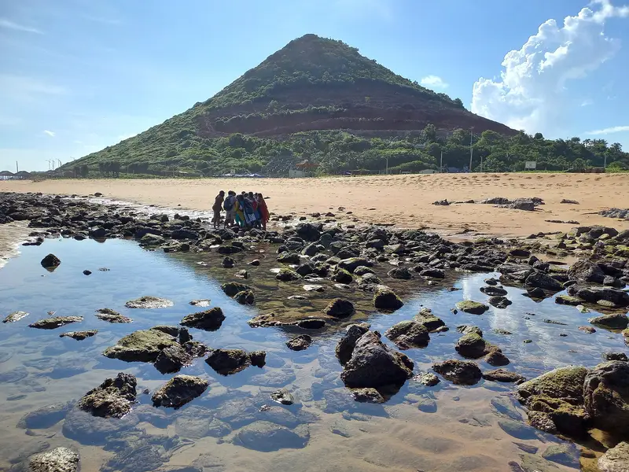

Day 2 · Stop 08 · Blue Flag beach ★ Main stop
🕒 Day 2 · 3:00 – 6:30 PM may shift
Rushikonda Beach
Blue Flag beach on the north coast
A golden, Blue Flag-certified beach north of the city, loved for clean sand and water sports.
- Blue Flag certified
- Golden sand, green hills
- Water sports and sunrise

About Rushikonda Beach
Rushikonda Beach lies north of the city along the coast road, where green hills roll down to a wide curve of golden sand. It is maintained by the Andhra Pradesh Tourism Development Corporation (APTDC).
It is one of the cleanest beaches in Visakhapatnam and holds Blue Flag certification, the international eco-label for clean, safe and well-managed beaches.
The wide bay is popular for water sports when the sea allows, and for sunrise walks, when tiny crabs leave patterns across the wet sand.
What we'll see
- Golden sand and turquoise water
- Water sports, when they're running
- Sunrise walks and crab-trail patterns
- Hilltop views over the bay
Photo gallery


.jpg){kind=link}
.jpg){kind=link}
Crew plan · Day 2 · Stop 8 of 8
3:00 – 6:30 PM · Day 2 times may shift
The grand finale: sunset on the sand, the final group reel, and one last horn for the Vizag Express.
Open in Google MapsTips
- Swim only where the lifeguards say it's safe.
- Water sports depend on the sea and the season: check on the day.
- There's little shade: bring sunscreen and water.